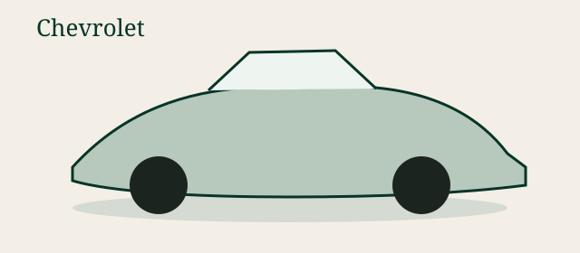

SYN-VB-CABIN-01
Filtro de cabine (demo)
gm-br-vectra-family-synthetic: Catálogo sintético focado em Vectra + narrativas de plataforma GM Brasil (Família I/II). Códigos NÃO são OEM reais. Use CepChev/TecDoc/Nakata para batida profissional.
| De | Para | Confiança | Motivo |
|---|---|---|---|
| syn-cabin-filter-b | syn-cabin-filter-c | synthetic | Alias de embalagem só para demo da UI entre gerações. Não é claim real B↔C de filtro de cabine. |
| syn-air-filter-b | syn-air-filter-c | synthetic | Aresta sintética para exercitar busca cross-generation em filtros de ar. |
| syn-fuel-filter-b | syn-fuel-filter-c | synthetic | Demo de embalagens distintas de filtro de combustível — valide no veículo real. |
| syn-wiper-front | syn-wiper-front-c | synthetic | Demo de palhetas por geração; comprimento e encaixe podem divergir. |
| syn-spark-b | syn-spark-c | community-proposed | Proposta comunitária fictícia para UI: motores Family II são citados em ambas as eras, sem prova de mesmo eletrodo/grau térmico. |
| syn-oil-filter-shared | syn-cabin-filter-b | do-not-advise | Ligação inválida entre categorias, proposital, para provar bloqueio de orientação insegura. |
| syn-brake-pad-front | syn-brake-pad-alt | do-not-advise | Equivalência de freio bloqueada no alpha sem fonte curada. |
| syn-brake-pad-front | syn-brake-pad-c | do-not-advise | Não cruzar pastilhas B↔C sem evidência curada — categoria de segurança. |
| syn-spark-family2 | syn-spark-b | community-proposed | Proposta educacional: narrativa pública Family II no Brasil sugere discussão conjunta de itens de ignição entre Vectra e parentes — ainda exige código OEM e grau térmico iguais. SKUs sintéticos. |
 Chevrolet Vectra B
Chevrolet Vectra B Era do Vectra B brasileiro, associada à engenharia Opel Vectra B.
 Chevrolet Vectra C
Chevrolet Vectra C O 'Novo Vectra' brasileiro não é o Vectra C europeu; fontes públicas descrevem base próxima à Zafira e visual inspirado no Astra.

Chevrolet Astra GContemporâneo do Vectra no Brasil; fontes públicas citam compartilhamento de componentes com Vectra/Zafira em várias áreas.
Minivan citada em reportagens como base relacionada ao Novo Vectra brasileiro.
Antecessor histórico do Vectra no Brasil; motores Family II são amplamente citados na linhagem.
Entrada da Família I no Brasil; Celta/Prisma/Meriva/Montana antiga compartilham muitos itens segundo literatura de oficina — aqui so narrativa.
Derivado da familia Corsa no Brasil.
Sedan da familia Celta/Corsa.
Citada junto a Astra/Vectra em compartilhamento de acabamentos internos em algumas reportagens.